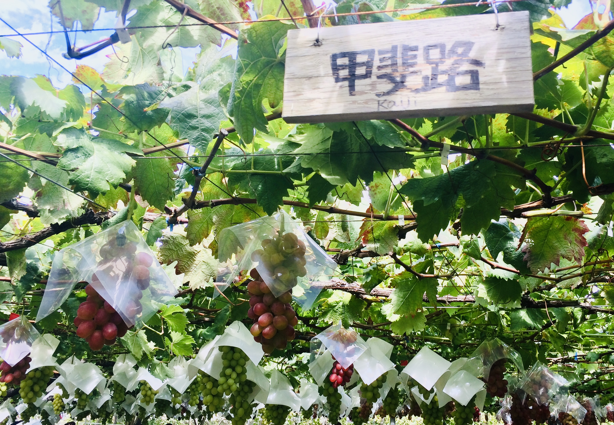

e<!DOCTYPE html>
<html>
<head>
  <meta charset="utf-8">
  <meta name="viewport" content="width=device-width, initial-scale=1.0">
  <title>About</title>
  <link href="https://maxcdn.bootstrapcdn.com/font-awesome/4.7.0/css/font-awesome.min.css" rel="stylesheet" integrity="sha384-wvfXpqpZZVQGK6TAh5PVlGOfQNHSoD2xbE+QkPxCAFlNEevoEH3Sl0sibVcOQVnN" crossorigin="anonymous">
  <link rel="stylesheet" type="text/css" href="stylesheet.css">
</head>
<body>
  <header>
    <div class="container">
      <span class="fa fa-bars menu-icon"></span>
      <div class="header-right">
        <a href="https://skawataki.github.io/">Home</a>
        <a href="about">About</a>
        <a href="research">Research</a>
        <a href="contact">Contact</a>

      </div>
      </div>
  </header>
 
  <div class="message-wrapper">
    <div class="container">
      <div class="heading">
        <h2>Who I am</h2>
      </div>
  <br>  
  <p>
   <h3>Academic Background</h3>
   
<p>   
<h4>2014</h4>
      <ul>
   <li> Enrolled in Univ. of Tokyo (Science II)</li>
   <li>Started my labolatory life in <a href="http://www.chembio.t.u-tokyo.ac.jp/department/lab/hatanaka.html" >Hatanaka Lab.</a></li> in Institute of Industrial Science (IIS), Komaba</li>
    </ul>    
</p>
  <BR>
 <p>  
<h4>2015</h4>
<ul>
 <li>  Did an internship in  <a href="https://www.med.kobe-u.ac.jp/physiol/research_e.html">Takumi Lab.</a>, RIKEN Center for Brain Science (CBS), Wako</li>
  <li>   Enrolled in <a href="https://www.glp.u-tokyo.ac.jp/en/">GLP-GEfIL Program</a> </li> 
    </ul> 
  </p> 
      <BR>
     <p>   
<h4>2016</h4>
Enrolled in UC San Diego Summer Session in Department of Cognitive Science
      </p> 
<BR>
  <p>   
<h4>2017</h4>
  <li>Joined in <a href="http://park.itc.u-tokyo.ac.jp/mgrl/sanada/index.html">Sanada Lab. </a></li>
    <li>Enrolled in Summer Program in Erasmus Medical Center (EMS), Netherlands Institute for Health Sciences</li>
      </p> 
<BR>
  <p>  
<h4>2018</h4>
    <ul>
    <li>Graduated Department of Biochemistry, School of Science, Univ. of Tokyo</li>
    <li>Started Ph.D. course in Department of Computational Biology and Medical Science, Graduate School of Frontier Science, Univ. of Tokyo</li>
        </ul>  
    </p>  
        </p>  
   <br><br>
  </div> 
    
     <br><br>

    <div class="container">
       <p>
<h3>Hobbies</h3>
Reading, cycling, traveling, etc.
      
  </p>
      <br><br>
</div>  
 <div class="container">
   <p>
     <h3>Hometown</h3>
    Yamanashi, Japan
   <BR>
     
  </p>
    </div>

  </div>
  

 <br><br>
    
  <footer>
    <div class="footer">
     
      <p>千里の道も一歩から.</p>
    </div>
  </footer>
</body>
</html>
